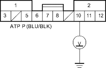
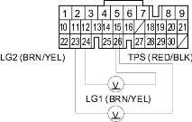

- Disconnect the under-dash fuse/relay box No. 9 connector (12P).
- Turn the ignition switch ON (II).
- Measure the voltage between the No. 10 terminal of the No. 9 connector (12P) and body ground. (The shift lever is in
 position.)
position.)
UNDER-DASH FUSE/RELAY BOX No. 9 CONNECTOR (12P)

Wire side of female terminals
Is there voltage?
YES - Repair open in ATP P wire between the transmission range switch and the multiplex control unit. 
NO - Go to step 12.
- Turn the ignition switch OFF.
- Reconnect the No. 9 connector (12P).
- Turn the ignition switch ON (II).
- Measure the voltage between PCM connector terminals A15 and A23 or A24.
PCM CONNECTOR A (31P)

Wire side of female terminals
Is there about 0.5 V?
YES - Go to step 20.
NO - Go to step 16.
- Turn the ignition switch OFF.